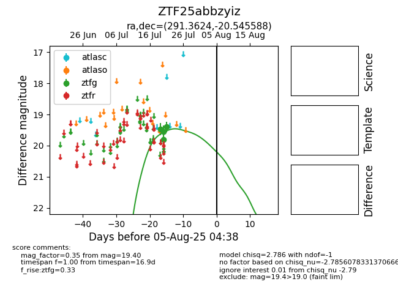

Target ZTF25abbzyiz at 2025-08-05 23:02, see:
FINK: fink-portal.org/ZTF25abbzyiz
Lasair: lasair-ztf.lsst.ac.uk/objects/ZTF25abbzyiz
ALeRCE: alerce.online/object/ZTF25abbzyiz
alt names
ZTF25abbzyiz (ztf,fink)
coordinates:
equatorial (ra, dec) = (291.3624,-20.54559)
galactic (l, b) = (17.8706,-16.45436)
photometry
last ztfg=19.40
4 ztfg detections
